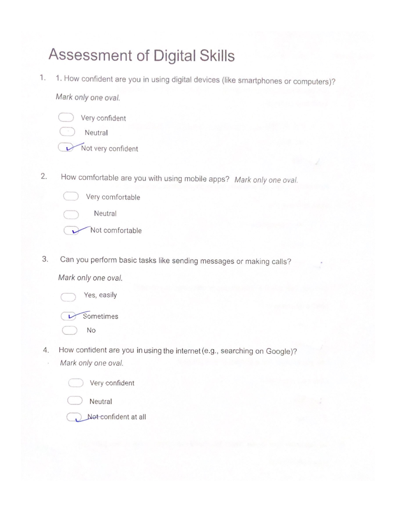
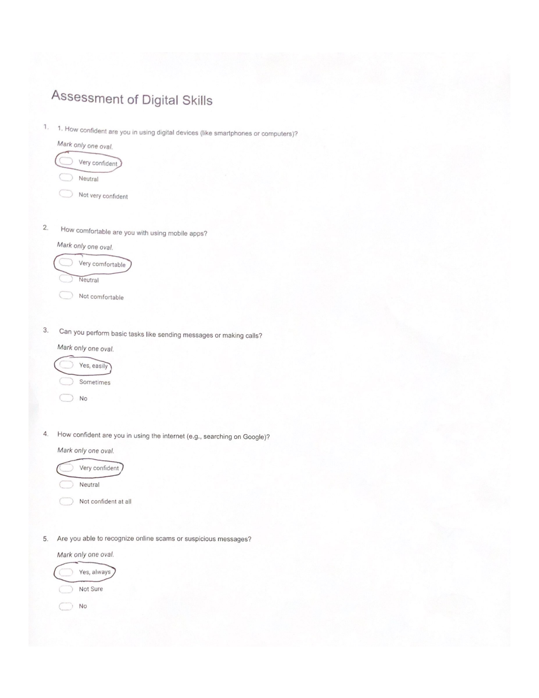
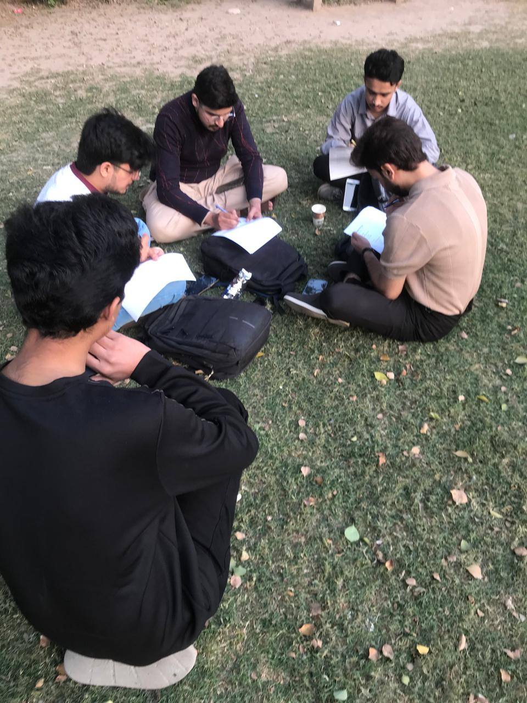
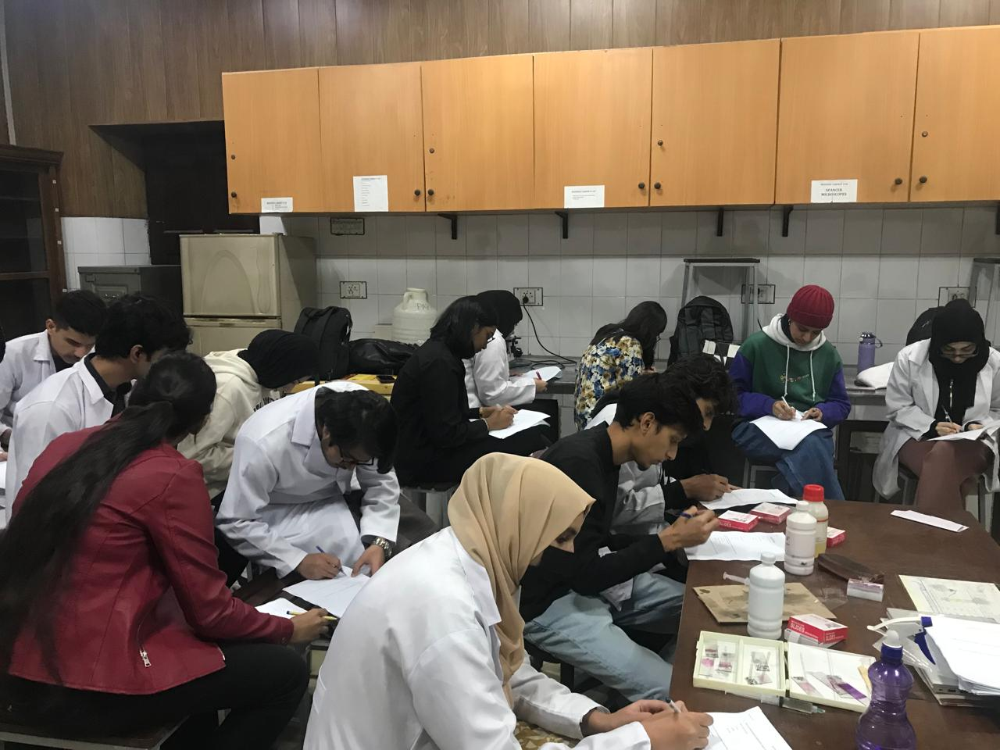

Evidence of Action
Comprehensive documentation of our community outreach initiatives, workshops, and survey campaigns bridging the digital divide for senior citizens.
Community Awareness Campaign
Strategic poster campaign across parks, houses, and shops to raise awareness about digital literacy workshops and our Digital Bridge initiative.
Smart Action: Digital Literacy Workshops
Conducted 3 targeted workshops teaching WhatsApp, ChatGPT, phishing awareness, and mobile usage to senior citizens at UVAS and public areas.


Comprehensive Survey Evidence
Complete survey documentation including pre-intervention baseline, post-intervention impact assessment, and participant feedback surveys conducted at Education University, Parks, and UVAS Lahore.





